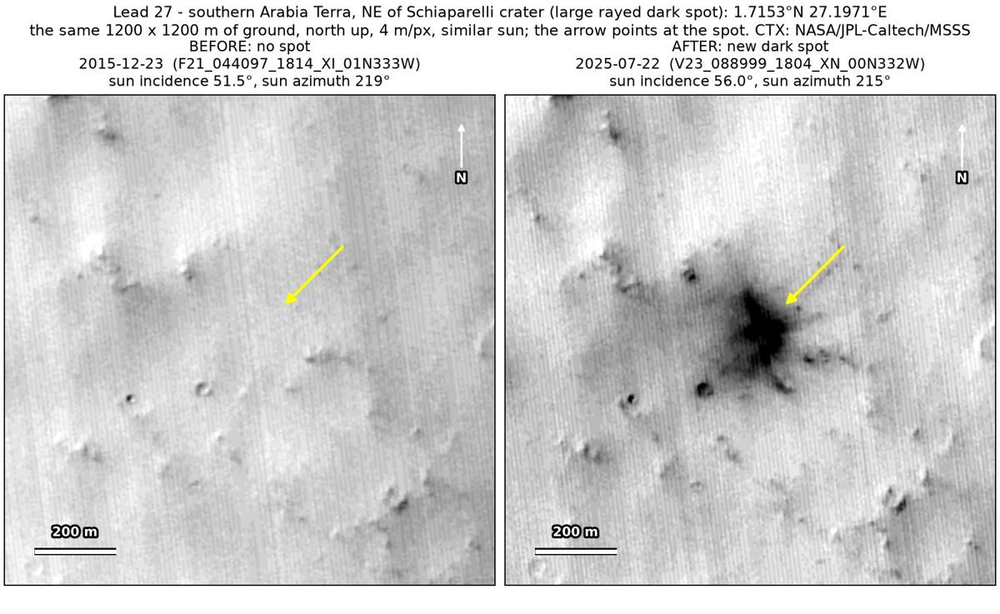
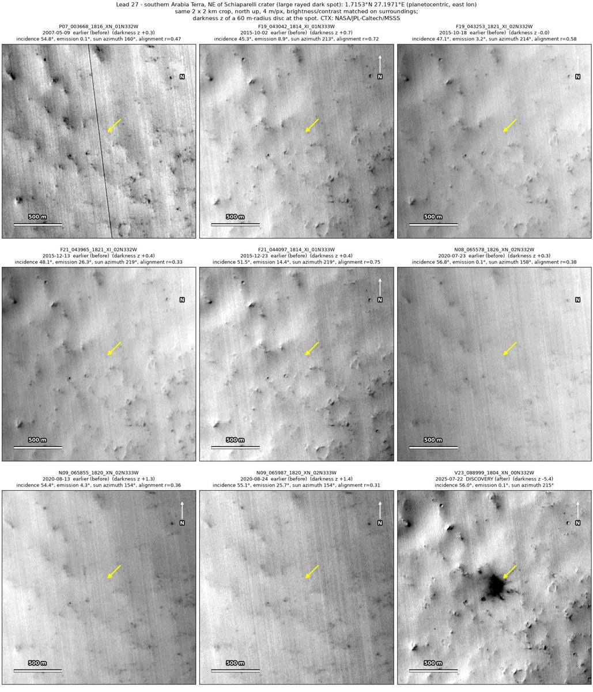
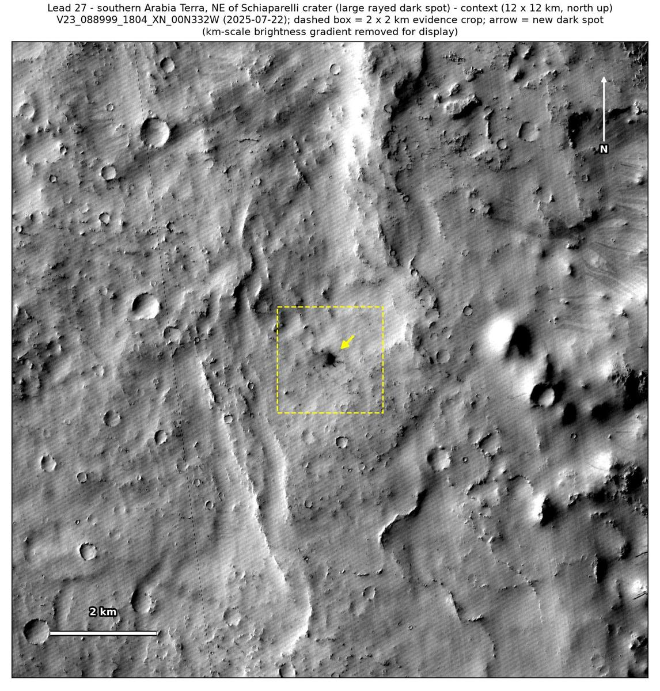

Professor of Mathematics
Paata Ivanisvili
Department of Mathematics, University of California, Irvine

← Possible new impact sites on Mars
Candidate 27: Large rayed dark spot in southern Arabia Terra, north-east of Schiaparelli crater
Promising · roughly 60%

What changed. A large, irregular dark spot with radiating lobes, its core 100 × 150 m inside a halo 250 m across, appeared on bright plains of southern Arabia Terra, north-east of Schiaparelli crater, between August 2020 and July 2025. It is in one CTX image so far.
Why it may be a new impact. Eight earlier images, from 2007 to 2020, show nothing there. Four of them, from October and December 2015, have the sun in the same direction as the July 2025 image, and a dark speck 290 m away shows in all four. A compact core with a halo and radiating lobes is how the blast zone of a small new crater can look, and is unlike the tracks of a dust devil.
- Location
- 1.715° N, 27.197° E
- Absent
- 9 May 2007, 2 October 2015, 18 October 2015, 13 December 2015, 23 December 2015, 23 July 2020, 13 August 2020 and 24 August 2020
- Present
- 22 July 2025
- Size
- Dark core 100 × 150 m with radiating lobes, inside a halo 250 m across
- Confidence
- Promising candidate: roughly 60% likely to be a new impact.
- Caveat
- Only one image shows it, and that image has strong striping, so a flaw in it cannot be fully ruled out. No image from the high-resolution HiRISE camera covers it; the nearest ends 11.7 km away. Like every candidate here, it is unconfirmed: see the caveat.

